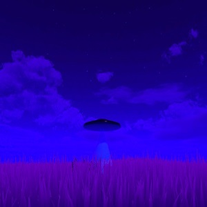
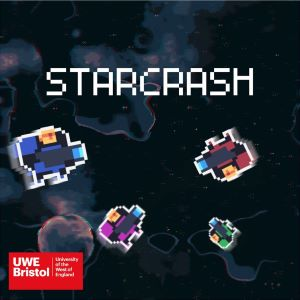
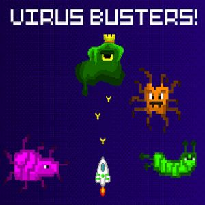

Projects

UFO-OH!
UFO Arcade Game. Game is currently in early development and is currently a solo project. Click the link for a look at the project in it's current state. STILL IN DEVLEOPMENT!
Cooming Soon...
Starcrash
Starcrash is a Co-Op arcade shooter game, this game was heavily inspired by games such as The Binding of Issac and Moonlighter. This was a group project for the Commercial Games Development module in my final year at university. This project helped me sharpen my programming skills but also to work as part of a larger team. I worked on the camera system and general gameplay programming.
View ProjectTickle Island - Global Game Jam 2024
Tickle Island has the player be an alien chasing people around different islands, the player must tickle them all to progress. Although not mandatory the University of the West of England highly recommended that students should try and partake in the Global Game Jam, the university was a hosting site for the 2024 Global Game Jam. Me and a team of other students submitted Tickle Island, I worked primarily on the AI for this game but also helped with general gameplay programming as well.
View Project
Virus Busters - Mini Game Jam
Virus Busters is a basic shooter game; the player must shoot viruses as they come towards them until reaching the final boss. A few friends and I participated in a Mini Game Jam at the start of 2023, this was all our first time making a game to completion. I worked on some of the AI and some parts of the player movement.
View Project
Nostalgia Relaxation Project
This project was created for the second part of the Advanced Technologies module I undertook at university. The goal was to make an immersive relaxation experience, for my studies into this project i decided to use nostalgia as the relaxation factor. This led me to create an expereince very similar to Minecarft.
View Project
Environment Asset Populater
This project was created for the first part of the Advanced Technologies module I undertook at university. The goal was to use Unity's UI Toolkit to create a tool that can be used to create more efficent workflows for developers. I created a tool that can be used to populate a scene with a variaty of environmental assets such as trees and bushes. This tool also had a basic asset creater but wasn't further developed upon.
View Project
Gameplay Programming Project
This Project was created for the Gameplay Programming module in my second year of university. The project has me undertake a few different programming tasks, such as a third person player controller, basic cutscene, power-ups, player stats and enemy AI. This project also had some basic Level Design features as well.
View Project